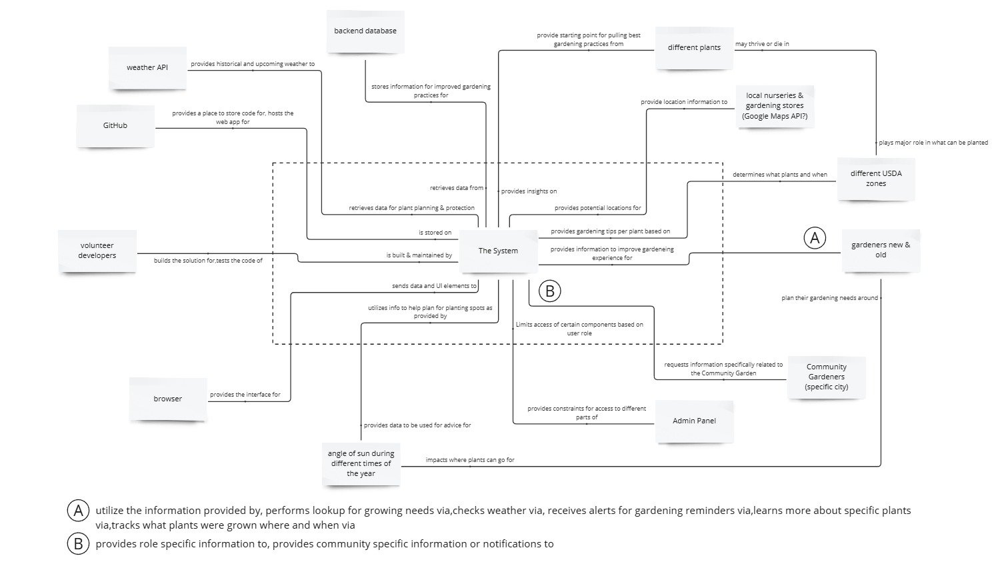
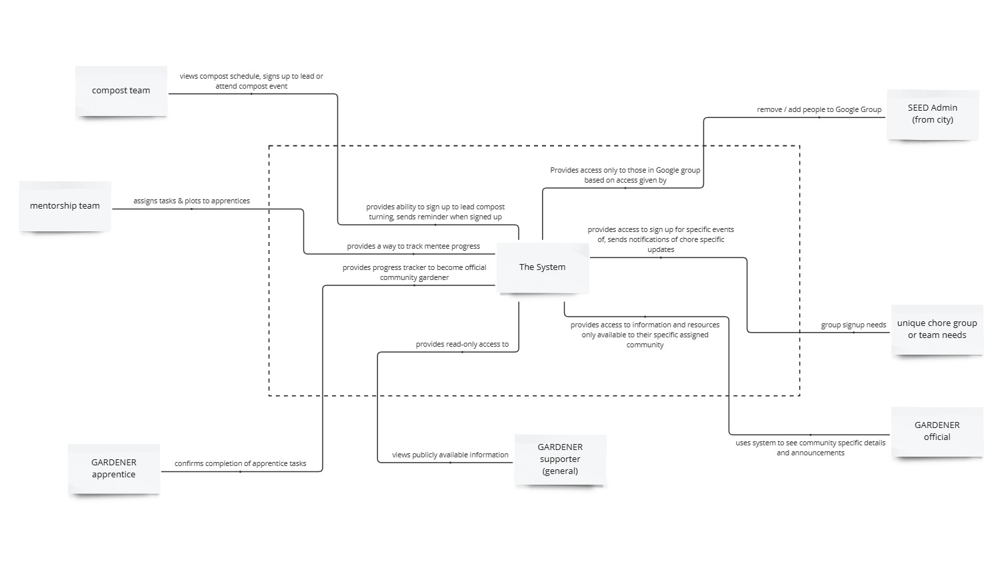

Learn more about this project here.
Current full & updated version of this page is currently in the works & can be found here.
Context Diagrams#
Below is the initial context diagram created as part my work in Cornell's CESYS521 Defining Scope course.
Main General Use Context Diagram#
This can be found here. 
Community Gardener Specific Context Diagram#
This can be found here. 
Scenarios to Consider#
In alignment with the original ideation, the following are scenarios written as prep for use cases relating to the system.
-
Automatically receiving weather alerts when certain thresholds are hit
-
Checking planting dates as estimated by the system based on USDA zone
-
Viewing historical weather data for local area
-
Viewing the system options
-
Adding plants to the system
-
Finding local nurseries and gardening supply stores via the system
-
Viewing angle of the sun based on time of year and location
-
Viewing plant data in the system
-
Searching the system for plants to grow based on different criteria
-
Updating plant data in the system
-
Deleting plant data in the system
-
Tracking what plants were planted where (e.g.: front yard) and when via the system
-
Viewing companion plants as outlined in the system
-
Updating companion plant data in the system
-
Adding your current location in the system (if not using GPS)
-
Viewing growing / gardening tips via the system (per plant, general care, etc)
-
Providing feedback on the system
-
Submitting bug issues in the system
-
Emailing plant data to someone via the system
-
Finding companion plants for specific plants via the system
-
Providing helpful hints when “errors” happen in the system
-
Provides access to training modules (PCG only)
-
Provides training progress to gardening mentors
Use Cases#
You can review the user cases here.
Use Case Diagrams#
TBD
General System User#
TBD
General User Weather Component#
TBD
General User Saving Plants Component#
TBD
System Admin, Community Lead, Educator#
TBD
Gardener Community Role (Member)#
TBD
Gardener Role Assignment (Team or Chore Assigned)#
TBD
Community Gardener Component (Plots)#
TBD
Scope Tree#
TBD
TheSystem#
TBD
TheSystem.GeneralUser#
TBD
TheSystem.AdminAccess#
TBD
TheSystem.CommunityMember#
TBD